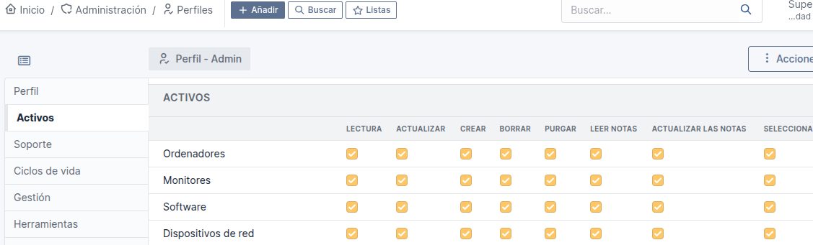
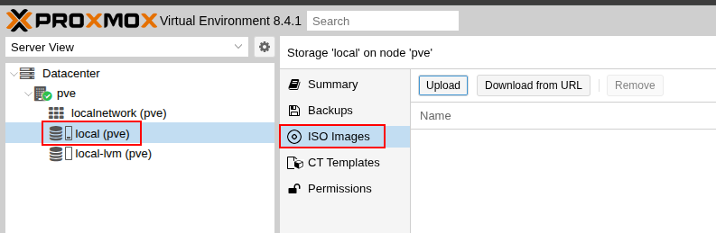

PROYECTO FINAL DEL CICLO ASIX (Proyecto SIGEI-GLPI)
1 - Escenario
2 - Estructura Detallada del Escenario AWS con GLPI
Diagrama de arquitectura

Tabla de componentes
| Capa | Componente | Versión | Función | Configuración Recomendada |
|----------------|--------------|----------|-----------------------------|-----------------------------------------------|
| Infraestructura| AWS EC2 | - | Hosting de la solución | t3.medium (2vCPU, 4GB RAM) |
| SO | Ubuntu Server| 22.04 LTS| Base del sistema | Auto-updates habilitados |
| Servidor Web | Apache | 2.4.x | Servir contenido web | Módulos: rewrite, ssl, headers |
| Lenguaje | PHP | 8.1 | Procesamiento backend | Extensiones: mysqli, gd, xml, curl, zlib, intl|
| Base de Datos | MariaDB | 10.6+ | Almacenamiento de datos GLPI| InnoDB, utf8mb4_unicode_ci |
| Aplicación | GLPI | 10.x | Gestión de tickets IT | Configuración optimizada para 50+ usuarios |
Usuarios y Permisos
| Usuario | Grupo | Directorios | Permisos |
|-------------|----------|--------------------|----------|
| www-data | www-data | /var/www/html/glpi | 750 |
| mysql | mysql | /var/lib/mysql | 700 |
| root | root | /etc/glpi | 600 |
Especificaciones Técnicas Recomendadas
Requerimientos de Hardware.
```bash | Componente | Mínimo | Recomendado | Producción | |----------------|--------|-------------|-------------| | vCPUs | 1 | 2 | 4+ | | RAM | 2GB | 4GB | 8GB+ | | Almacenamiento | 20GB | 50GB | 100GB+ (SSD)| | IOPS | 100 | 500 | 1000+ |
## 3 - Introducción del proyecto
### 3.1 - Descripción del proyecto
- *El presente proyecto tiene por objeto crear una **aplicación web de Código abierto** que permita llevar el **control** de los equipos informáticos de una organización (empresa particular o de mantenimiento, escuela, instituto, ministerios, agencias, etc...) y sobre todo mantener un **historial ordenado** de todo lo que ocurre con el **soporte técnico.***
### 3.2 - Objetivos del proyecto
- *Tener un **inventario completo** de los dispositivos tecnológicos de la organización.*
- *Gestionar **incidencias** o problemas técnicos de manera ordenada.*
- *Crear **códigos QR** para gestionar puntualmente vía móvil esas incidencias o consultas.*
- ***Asignar tareas** a técnicos y hacer **seguimiento** de su resolución.*
- *Obtener reportes útiles sobre el **estado del sistema** y los equipos.*
- *Mejorar la **atención al usuario interno** de la empresa.*
## 4 - Análisis de opciones y requisitos vistos para considerar
### 4.1 - Snipe-IT

***Snipe-IT** es una **aplicación web de código abierto** diseñada para la **gestión de activos de TI.** Es una solución popular entre empresas y organizaciones que buscan una herramienta flexible y personalizable para rastrear y administrar sus activos de **hardware y software.***
#### 4.1.1 - Enfoque
- *Principalmente una herramienta de gestión de activos de TI (**ITAM-gestión de activos de TI** ).*
- *Sobresale en el **seguimiento** de activos de hardware y software, **licencias** e información relacionada.*
#### 4.1.2 - Fortalezas
- *Interfaz **fácil** de usar.*
- *Sólidas capacidades de seguimiento de activos.*
- *Ideal para organizaciones que necesitan un **inventario detallado** de hardware y software.*
- *Muy bueno en la gestión de licencias.*
- *Muy bueno en el rastreo de los activos con **códigos de barras y códigos QR.***
#### 4.1.3 - Limitaciones
- *Menos robusto en áreas como la mesa de ayuda y la gestión de servicios en comparación con **GLPI.***
### 4.2 - GLPI ( Gestionnaire Libre de Parc Informatique)

*Un software **gratuito y open-source** para gestionar activos de TI (**hardware, software**).
GLPI permite **administrar inventarios** de equipos, **seguimiento de problemas** y **gestión de tareas** relacionadas con el **mantenimiento** y soporte de **sistemas informáticos**; o sea atender, ayudar, solucionar y rastrear problemas e incidencias (**tickets**).*
#### 4.2.1 - Enfoque
- *Una **suite integral** de gestión de servicios de TI (ITSM).*
- *Incluye **gestión de activos**, **mesa de ayuda** y **funcionalidades** de mesa de servicio.*
#### 4.2.2 - Fortalezas
- *Centraliza inventarios, incidencias y recursos en una **plataforma web.***
- ***Multiplataforma + plugins** (flexible y escalable).*
- *Fuertes herramientas para el **descubrimiento de redes.***
- *Cumplir normas (ITIL, **auditorías de software**).*
#### 4.2.3- Limitaciones
- *Puede tener una curva de aprendizaje **más pronunciada.***
- *La interfaz puede considerarse **menos moderna** que la de **Snipe-IT***
**Snipe-IT es más especializado, se ocupa de el "que" tiene la empresa en cuanto a hardware y software.**
**GLPI es más generalizado, se ocupa de "como" la empresa proporciona los servicios informáticos a sus usuarios.**
## 5 - Decisión: GLPI
### 5.1 - Motivos
- *Es una elección **más sólida** que Snipe-IT, ya que ofrece un conjunto completo de **herramientas ITSM**, incluyendo **mesa de ayuda**, gestión de **incidencias, problemas y cambios.***
- *En definitiva una mayor capacidad de la aplicación de **crecer** y manejar más amplio volumen de **control de existencias**, o sea más detalle y vigilancia de todo.*
- *GLPI cuenta con una **comunidad global** de usuarios y desarrolladores que contribuyen a su desarrollo y soporte,esto nos asegura que la herramienta esté en **constante evolución** y que haya **recursos disponibles** para resolver problemas y dudas.*
- *GLPI es utilizado en todo el mundo, con una **fuerte presencia en Europa y sobre todo en América Latina** donde prácticamente es el dominador en ese mercado.*
- *Su adaptabilidad a diferentes **idiomas y normativas** es lo que lo hace adecuado para **organizaciones internacionales** que buscan una solución de gestión de IT eficiente y flexible.*
## 6 - Herramientas
### 6.1 Parte servidor (backend)
#### 6.1.1 - Ubuntu Server

***Sistema operativo que nos proporcionará la base para ejecutar los servicios***
- *Es una versión del sistema operativo Ubuntu diseñada específicamente para su uso en **servidores.***
- ***No incluye** una interfaz gráfica de usuario (GUI), lo que reduce el consumo de recursos y mejora el rendimiento. En su lugar, se administra principalmente a través de la **línea de comandos.***
- *Ofrece una amplia gama de software y herramientas para configurar diversos **servicios de servidor**, como servidores web (**Apache, Nginx**), servidores de bases de datos (**MySQL, Mariadb, PostgreSQL,...**) y servidores de archivos.*
- *Ubuntu Server se caracteriza por su **estabilidad y seguridad**, lo que lo convierte en una opción confiable para entornos de producción.*
- *Recibe **actualizaciones de seguridad** periódicas para proteger contra vulnerabilidades.*
- *Como parte de la familia Ubuntu, Ubuntu Server es de **código abierto**, lo que significa que es **gratuito** y se puede modificar y distribuir libremente.*
- *Usos comunes:*
- *Alojar **sitios web** y **aplicaciones web.***
- *Servir **BBDD.***
- *Administrar **redes y servicios de red.***
- *Implementar **servicios en la nube.***
- ***Servidores de archivos.***
#### 6.1.2 - Apache

***Será el servidor web que nos gestionará las solicitudes HTTP y nos proporcionará las páginas web.***
- *Apache es un software de **servidor web HTTP** de código **abierto.***
- *Esto significa que es responsable de recibir **solicitudes de los navegadores** web y enviar las **páginas web** correspondientes al usuario.*
- *Es una pieza fundamental de la **infraestructura de Internet**, ya que alimenta una gran parte de los sitios web en línea.*
- *Su **arquitectura modular** permite extender sus funcionalidades mediante la instalación de **módulos adicionales.** Esto lo hace muy flexible y adaptable a diferentes necesidades.*
- *Funciona en una amplia variedad de **sistemas operativos**, incluyendo **Linux, Windows y macOS.***
- *Apache es conocido por su **fiabilidad y estabilidad**, lo que lo convierte en una opción popular para **sitios web de alto tráfico.***
- *Cuenta con una gran **comunidad de usuarios y desarrolladores** que proporcionan soporte y contribuyen a su desarrollo.*
- *Apache es utilizado por muchos proveedores de **alojamiento web** para alojar sitios web de sus clientes.*
- *Puede utilizarse como servidor de aplicaciones para alojar aplicaciones **web dinámicas.***
- *Apache también puede funcionar como un **servidor proxy**, actuando como intermediario entre los navegadores web y otros servidores.*
#### 6.1.3 - MariaDB

***Será la BBDD que nos almacenará los datos de GLPI.***
- ***Es un sistema de gestión de BBDD relacionales (RDBMS)** de código **abierto**, las cuales almacenan los datos en **tablas separadas** en lugar de poner todos los datos en un solo sitio.*
- *MariaDB mantiene alta **compatibilidad con MySQL**, por lo que la mayoría de las aplicaciones que funcionan con MySQL pueden migrar sin cambios.*
- *Usa el mismo **formato de archivos, protocolos y APIs** (como PHP, Python, Java, etc.).*
- *Incluye **motores de almacenamiento** optimizados como Aria, XtraDB (en lugar de InnoDB) y ColumnStore para análisis de datos.*
- *Soporte para **consultas paralelas** y **optimización avanzada.***
- ***Nuevas funcionalidades:***
- ***JSON y GIS:** Soporte mejorado para datos JSON y geográficos.*
- ***Window Functions:** Funciones analíticas avanzadas (desde MariaDB 10.2).*
- ***Temporal Tables:** Tablas que registran cambios históricos.*
- *Incluye características como **encriptación** de tablas, **autenticación** con plugins externos (ej. PAM, LDAP) y **roles de usuarios.***
- *Empresas como Google, Wikipedia, Red Hat, Ubuntu (es el RDBMS predeterminado en muchas distribuciones Linux) y Alibaba lo utilizan en producción.*
#### 6.1.4 - PHP

***Será el lenguaje de programación que ejecutará el código de GLPI y nos generará las páginas dinámicas.***
- ***PHP (Hypertext Preprocessor)** es un lenguaje de programación de código **abierto** especialmente diseñado para el desarrollo web y la creación de sitios dinámicos. Se ejecuta en el servidor **(backend)** y permite interactuar con **BBDD**, generar contenido **dinámico** y manejar sesiones de usuarios.*
- *El código PHP se ejecuta en el servidor (como **Apache o Nginx**), generando **HTML** que se envía al navegador.*
- *Similar a **C, Java o Perl**, con **tipado dinámico.***
- *Soporte **nativo** para MySQL/MariaDB, PostgreSQL, SQLite, MongoDB y más.*
- *Funciona en Windows, Linux, macOS y es usado por **CMS** como WordPress, Drupal y Joomla.*
- *Soporta **programación orientada a objetos** (POO) y tiene miles de librerías (**framework** como Laravel, Symfony).*
- *Se utiliza para crear páginas web dinámicas (ej.: tiendas online, blogs, foros), desarrollar **APIs** (junto con **JSON o XML**),**automatizar** tareas del servidor (ej.: enviar emails, subir archivos), etc...*
#### 6.1.5 - GLPI

***Será la aplicación detallada anteriormente que se instalará en el servidor y que nos gestionará los activos de TI con todos los servicios que nos ofrece.***
#### 6.1.6 - AWS

***La instancia será la MV en la nube que nos alojará todo lo anterior.***
- ***AWS, o Amazon Web Services**, es una plataforma de servicios en la **nube** que ofrece una amplia gama de **herramientas y soluciones.** Empresas y desarrolladores usan AWS para **almacenar datos, alojar aplicaciones, crear infraestructura virtual** y mucho más.*
- ***Computación:** Con Amazon EC2, podemos ejecutar **servidores** virtuales para nuestras aplicaciones.*
- ***Almacenamiento:** Amazon S3 nos permite guardar grandes cantidades de datos con **alta disponibilidad y seguridad.***
- ***BBDD:** Podemos administrarlas con servicios como Amazon RDS.*
- ***Inteligencia artificial:** AWS tiene herramientas para aprendizaje automático, análisis de datos y procesamiento de lenguaje natural.*
***En resumen, el servidor nos manejará toda la lógica, el almacenamiento y la generación de contenido.***
### 6.2 Parte del cliente web (frontend)
#### 6.2.1 - Google Chrome

***Será el navegador WEB que nos interpretará y nos mostrará las páginas generadas por el servidor.***
- *Es un **software** que nos permite acceder a Internet y visualizar páginas web.*
- *Que entre sus principales **funciones** se incluye:*
- ***Velocidad:** Chrome es conocido por su velocidad y eficiencia, lo que permite cargar páginas web rápidamente.*
- ***Simplicidad:** Tiene una interfaz de usuario sencilla y fácil de usar.*
- ***Seguridad:** Chrome incluye funciones de seguridad integradas para proteger a los usuarios de malware y sitios web peligrosos.*
- ***Sincronización:** Permite sincronizar marcadores, historial y contraseñas entre diferentes dispositivos.*
- ***Extensiones:** Ofrece una amplia variedad de extensiones que permiten personalizar y ampliar la funcionalidad del navegador.*
- ***Integración con servicios de Google:** Se integra perfectamente con otros servicios de Google, como la Búsqueda de Google, GMail y YouTube.*
- ***Multiplataforma:** Está disponible para múltiples sistemas operativos, incluyendo Windows, macOS, Linux, Android e iOS.*
#### 6.2.2 - La interfaz de GLPI

***Es la que el usuario ve, maneja y toca todo lo relacionado con la experiencia de usuario***
- *La interfaz de GLPI **realiza** lo siguiente:*
- ***Muestra la UI:** Renderiza menús, formularios y datos (HTML/CSS generados por PHP).*
- ***Gestiona interacciones:** Validaciones, clics y peticiones.*
- ***Se comunica con el backend:** Envía/recibe datos al servidor PHP.*
***En resumen el cliente: Interfaz visual + acciones del usuario.***
### 6.3 - Recursos para la documentación
#### 6.3.1 - Visual Studio Code (VS Code)
{ width=15% }
***Editor de código fuente desarrollado por Microsoft, ligero, rápido y muy personalizable que utilizaremos para ajustar el documento del proyecto.***
- ***Características principales:***
- *Sirve para **escribir código** en muchos lenguajes.*
- ***Gratis y de código abierto.***
- *Funciona en **Windows, macOS y Linux.***
- *Tiene **extensiones** para añadir funciones extra (por ejemplo, ayuda para depurar código, colorear la sintaxis, conectar con Git, etc.).*
- ***Autocompletado** inteligente con inteligencia artificial (como Copilot).*
- *Integración con **terminal, control de versiones (Git) y depuración.***
***VS Code nos ayuda en un rompecabezas (valga la expresión) a organizar nuestras piezas, nos da ideas de cómo unirlas y nos avisa si algo no encaja bien.***
#### 6.3.2 - Markdown
{ width=15% }
***Markdown es un lenguaje de marcado ligero que nos permite dar formato a texto plano de manera sencilla, donde los cambios de formato se ven inmediatamente, Markdown utiliza una sintaxis simple para indicar cómo debe formatearse el texto sin usar botones ni menús.
Será el lenguaje que utilizaremos para describir el proyecto.***
- ***Características clave:***
- ***Sencillez:***
- *Su sintaxis es fácil de aprender y recordar, lo que permite escribir documentos formateados rápidamente.*
- ***Legibilidad:***
- *Los archivos Markdown son legibles incluso en su forma de texto plano, sin necesidad de renderizarlos.*
- ***Portabilidad:***
- *Los archivos Markdown se pueden abrir y editar en cualquier editor de texto, lo que los hace independientes de plataformas y software específicos.*
- ***Versatilidad:***
- *Markdown se puede utilizar para crear una variedad de documentos, desde simples notas hasta documentación técnica y páginas web.*
- ***Compatibilidad:***
- *Muchos sitios web y aplicaciones, como GitHub, Reddit y Slack, admiten Markdown.*
***Markdown es una forma fácil y rápida de escribir texto con formato (como títulos, negritas, listas o enlaces) usando solo el teclado, sin menús ni botones.***
**6.3.3 - Tex Live.**
{ width=20% }
***TeX Live es un conjunto de programas para escribir y compilar informes en LaTeX que es además un sistema para crear documentos muy bien presentados.
Será el compilador para generar nuestro documento PDF del proyecto.***
- ***Características:***
- ***LaTeX** será el lenguaje especial que escribirá y transformará nuestro documento en uno mejor visualmente.*
- ***TeX Live** es la **caja de herramientas** que necesitamos para que LaTeX funcione en nuestro ordenador.*
***Nos incluye:***
- ***LuaLaTeX:** Es una variante de **LaTeX** que utiliza **LuaTeX** como su **motor de procesamiento** en lugar de pdfTeX o XeTeX.
Permite una mayor flexibilidad y personalización, ya que incluye el lenguaje de programación **Lua**, lo que permite a los usuarios extender las capacidades de LaTeX mediante scripts y configuraciones avanzadas.
Es especialmente útil para quienes necesitan funcionalidades adicionales como manipulación de **fuentes o gráficos personalizados***.
***Tex Live es un sistema de Tipografía para Documentación PDF.***
#### 6.3.4 - Pandoc
{ width=20% }
***Pandoc es una herramienta de software libre y de código abierto que se utiliza para convertir documentos de un formato a otro. Se le conoce como el "convertidor universal de documentos" debido a su amplia capacidad para manejar una gran variedad de formatos de entrada y salida y por tanto será el conversor que utilizaré para trasformar el documento del proyecto de Markdown a PDF.***
- ***Extremadamente útil** para tareas como la **creación de libros electrónicos**, la **generación de informes**, la **conversión de documentos web** a otros formatos, y mucho más.*
- *Es muy flexible y permite **personalizar** la salida de diversas maneras, incluyendo la **modificación de estilos**, la **inclusión de metadatos**, y la **manipulación de la estructura** del documento.*
- *Muy útil para la creación de **documentos académicos**, ya que se integra con **gestores de referencias bibliográficas**.*
#### 6.3.5 - Eisvogel
{ width=20% }
***Herramienta que mejora la presentación de documentos convertidos desde markdown a pdf, por tanto será la plantilla que nos facilitará la mejora de calidad en la creación del documento final de nuestro proyecto.***
- *Es una **plantilla de LaTeX para Pandoc**, diseñada específicamente para crear documentos **PDF** con una apariencia **profesional y elegante**.*
- *Muy popular para generar **informes, presentaciones** y otros **documentos técnicos** a partir de archivos **Markdown**.*
- *Gran cantidad de opciones de **personalización**, incluyendo la posibilidad de cambiar los **colores**, las **fuentes** y el **diseño** del documento.*
- *Facilita la creación de documentos LaTeX de **alta calidad** a partir de archivos Markdown, simplificando el proceso de **publicación**.*
### 6.4 - Publicación y Alojamiento de la Documentación en la Web
**6.4.1 - MkDocs.**
{ width=15% }
***Es un generador rápido de páginas web estáticas orientado a la creación de documentación de proyectos.
Será nuestro sitio HTML en donde se alojará nuestra documentación del proyecto.***
- *Los archivos fuente de documentación se escriben en **Markdown** y se configuran con un solo archivo de configuración **YAML**, que es un formato de serialización de datos legible por humanos inspirado en lenguajes como XML, C, Python o Perl.*
- *Con **MkDocs** podemos crear sitios HTML estáticos que se pueden alojar en páginas **GitHub** o en cualquier otro lugar que elijamos. En nuestro caso lo haremos en **GitHub.***
- *Existen infinidad de **temas o plantillas** disponibles para MkDocs que podemos elegir de entre los integrados, seleccionar alguno de los que se citan en la wiki [MkDocs Themes](https://github.com/mkdocs/mkdocs/wiki/MkDocs-Themes) o crear el nuestro propio con [Material for MkDocs](https://squidfunk.github.io/mkdocs-material/).*
- *Una de las grandes ventajas que nos ofrece MkDocs es la de obtener una **vista previa** de nuestro sitio mientras trabajamos. Esto se consigue mediante el **servidor de desarrollo** incorporado que incluso recargará y actualizará automáticamente nuestro navegador cada vez que guardemos los cambios.*
- *MkDocs es fácil de **personalizar** por lo que permite obtener la documentación de nuestro proyecto tal como lo deseamos personalizando el tema y/o instalando algunos complementos*
***Combina simplicidad con flexibilidad, permitiéndonos personalizar el diseño con temas y complementos.***
**6.4.2 - GitHub.**
{ width=25% }
***GitHub es una plataforma en línea diseñada para el desarrollo y la colaboración de software. Es el lugar donde desarrolladores y equipos pueden almacenar, compartir y trabajar juntos en proyectos.
En nuestro caso será la plataforma que alojará nuestro documento del proyecto, para una posterior visualización.***
- *Esto permite realizar un **seguimiento** de los cambios en el código a lo **largo del tiempo** y facilita la **colaboración** en proyectos, ya que varias personas pueden trabajar en el mismo código **simultáneamente.***
- *En GitHub, **podemos:***
- ***Alojar repositorios:** Guardar tus proyectos de código en un lugar centralizado.*
- ***Colaborar:** Trabajar con otros desarrolladores, proponiendo y revisando cambios a través de "pull requests".*
- ***Control de versiones:** Ver el historial de cambios, quién los hizo y por qué.*
- ***Automatizar tareas:** Usar "GitHub Actions" para automatizar pruebas, despliegues y más.*
- ***Publicar sitios web:** Utilizar **GitHub Pages** para alojar sitios web estáticos directamente desde tus repositorios.*
***Es una herramienta que fomenta la transparencia, la organización y la colaboración.***
## 7 - Instalación y configuración de las herramientas a utilizar
### 7.1 - AWS con Ubuntu Server 24.04
{ width=20% } { width=25% }
#### Creación de una instancia EC2 en AWS
- ***Paso 1. Iniciamos el laboratorio.***
- *Desde el curso de AWS Academy iniciamos el laboratorio pulsando en Start Lab y esperamos a que el icono que aparece junto al texto de AWS se ponga de **color verde**.*
{ width=65% }
- ***Paso 2.Accedemos a la consola de Administración de AWS.***
- *Desde la consola seleccionamos el servicio de **EC2**.*
{ width=40% }
- ***Paso 3. Buscamos el botón "Launch Instance" para crear una instancia EC2.***
{ width=50% }
- ***Paso 4. Le asignamos un nombre a la instancia EC2 que vamos a crear.***
{ width=100% }
- ***Paso 5. Seleccionamos la AMI y la arquitectura de la instancia EC2.***
- *En este paso tenemos que seleccionar la **AMI** (Amazon Machine Image) y la arquitectura. Para mi proyecto voy a seleccionar la imagen **Ubuntu Server 24.04 LTS (HVM), SSD Volume Type**, y la **arquitectura 64 bits (x86).***
{ width=90% }
- ***Paso 6. Seleccionamos el tipo de instancia EC2.***
- *Seleccionamos que vamos a crear una instancia de tipo **t2.micro.** que cuenta con 1 vCPU y 1 GiB de RAM.*
{ width=90% }
- ***Paso 7. Seleccionamos la clave pública SSH que le vamos a inyectar a la instancia EC2.***
- *En este ejemplo vamos a utilizar la clave pública **vockey** que está asociada a nuestra cuenta de usuario en la plataforma AWS Learner Lab. La clave privada la descargaremos más adelante desde la plataforma, para poder conectarnos por SSH con la instancia EC2.*
{ width=90% }
{ width=60% }
- ***Paso 8. Configuramos los grupos de seguridad.***
- *En este proyecto vamos a crear un nuevo grupo de seguridad y vamos a utilizar tres reglas para permitir tráfico **SSH, HTTP y HTTPS.***
- *SSH. Protocolo: TCP. Puerto: 22. Origen: 0.0.0.0/0*
- *HTTP. Protocolo: TCP. Puerto: 80. Origen: 0.0.0.0/0*
- *HTTPS. Protocolo: TCP. Puerto: 443. Origen: 0.0.0.0/0*
{ width=90% }
- ***Paso 9. Añadimos el almacenamiento que utilizará la instancia.***
- *En este paso configuramos cuál será el almacenamiento que utilizará la instancia EC2 que estamos creando.*
- *Para nuestro ejemplo en el proyecto no vamos a modificar ninguno de los parámetros que aparecen por defecto y utilizaremos un disco SSD de 8 GB.*
{ width=100% }
- ***Paso 10. Revisamos la configuración seleccionada.***
- *Para crear la instancia pinchamos sobre el botón **Lanuch Instance.***
{ width=40% }
- ***Paso 11. Estado de la instancia.***
- *En este paso nos aparece un mensaje indicando que la instancia se está creando.*
**Pincharemos sobre el identificador de la instancia que aparece en el cuadro de color verde.****
{ width=70% }
- ***Paso 12. Consultaremos el estado de la instancia desde la consola de administración.***
- *Cuando pasen unos segundos le aparecerá en la consola la instancia que acaba de crear.
Cuando la instancia muestre que está en estado **Running** es que está preparada para
conectarnos a ella.*
{ width=80% }
#### Nos conectamos a la instancia por SSH para ejecutar los comandos de instalación de las herramientas del proyecto
- ***Paso 1. Seleccionamos la instancia y pinchamos sobre "Conectar".***
{ width=100% }
- ***Paso 2. Vamos a obtener el comando para conectarnos desde un cliente SSH en Linux.***
- *En este paso nos aparece cómo podemos conectarnos a la instancia que acabamos de crear.*
- *Seleccionaremos la opción **SSH client**, y veremos los pasos que tenemos que realizar para conectarnos a la instancia.*
- *El comando que tenemos que utilizar para conectarnos a la instancia lo podemos copiar en este paso. En el comando aparece el nombre del archivo **.pem** de la clave privada (que hemos creado), el nombre del usuario y el nombre DNS público de la instancia.*
{ width=80% }
- *En nuestro caso al **crear par de claves** ya las hemos ubicado en el directorio **Música**, pero se pueden descargar pinchando sobe el texto **AWS Details** y le aparecerá en la parte derecha la posibilidad de descargar la clave como un archivo **.PEM o .PPK.**
En Linux utilizaremos la clave **.PEM**, cuando descarguemos la clave se descargará como **nombre.pem o nombre.ppk.***
{ width=100% }
{ width=40% }
- ***Paso 3. Nos conectamos por SSH desde Linux.***
- *Cambiamos los permisos del archivo para que solo el propietario tenga permisos de lectura.*
`sudo chmod 400 clave_aws.pem`
- *Ejecutamos el comando que copiamos en el **paso 2** para conectarnos por SSH a la instancia EC2 desde un terminal de Linux. El comando será parecido al este, pero el nombre DNS de la instancia será diferente.*
`sudo ssh -i "clave_AWS.pem" ubuntu@ec2-34-239-105-173.compute-1.amazonaws.com`
{ width=100% }
### 7.2 - Creación de la pila LAMP (Linux, Apache, MariaDB y PHP)
**INSTALACIÓN DE APACHE.**
{ width=20% }
***Paso 1. Instalamos:***
```bash
sudo apt update
sudo apt install apache2 -y
Paso 2. Realizamos un backup de nuestro 000-defaults.conf
sudo mv /etc/apache2/sites-available/000-default.conf /etc/apache2/sites-available/000-default.conf.bkp
Paso 3. Creamos un archivo de configuración (glpi.conf) para el sitio de GLPI en Apache como nos indica la "Documentación Oficial de GLPI".
https://glpi-install.readthedocs.io/en/latest/prerequisites.html#web-server
GLPI recomienda no colocarlo en el directorio por default de Apache "/var/www/html", sugiere colocarlo por fuera por lo cual lo colocaremos en "/var/www".
sudo nano /etc/apache2/sites-available/glpi.conf
<VirtualHost *:80>
ServerName edu.com
DocumentRoot /var/www/glpi/public
<Directory /var/www/glpi/public>
Options -Indexes +FollowSymLinks
AllowOverride All
Require all granted
RewriteEngine On
# Redirect all requests to GLPI router, unless file exists.
RewriteCond %{REQUEST_FILENAME} !-f
RewriteRule ^(.*)$ index.php [QSA,L]
</Directory>
ErrorLog ${APACHE_LOG_DIR}/glpi-error.log
CustomLog ${APACHE_LOG_DIR}/glpi-access.log combined
</VirtualHost>
Paso 4. Habilitamos el archivo .conf que hemos creado y habilitamos el modulo rewrite.
sudo a2ensite glpi.conf
sudo a2enmod rewrite
Paso 5. Recargamos, activamos y reiniciamos apache2.service
sudo systemctl reload apache2.service
sudo systemctl enable apache2.service
sudo systemctl restart apache2.service
INSTALACIÓN DE PHP.
 { width=25% }
{ width=25% }
Paso 1. Instalaremos los repositorios de php y actualizaremos.
sudo apt install software-properties-common apt-transport-https -y
sudo add-apt-repository ppa:ondrej/php -y
sudo apt update
Paso 2. Instalamos la versión de php que nos indica la "Documentación Oficial de GLPI", los paquetes necesarios y reiniciamos.
https://glpi-install.readthedocs.io/en/latest/prerequisites.html#php
 { width=40% }
{ width=40% }
sudo apt install php8.3 php8.3-cli php8.3-common libapache2-mod-php8.3 -y
sudo apt install libapache2-mod-fcgid php8.3-fpm -y
sudo systemctl restart apache2.service
Paso 3. Activamos variable "session.cookie_httponly" a "on" en "/etc/php/8.3/fpm/php.ini" y reiniciamos.
sudo nano /etc/php/8.3/fpm/php.ini
- Buscamos con el editor la variable session.cookie = y la activamos con on.
Es una medida de seguridad importante para proteger las sesiones de usuario en aplicaciones web PHP. Ayuda a prevenir el robo de cookies y la suplantación de identidad. Se recomienda habilitar esta directiva en todos los entornos de producción.
sudo systemctl restart php8.3-fpm
Paso 4. Habilitamos funciones instaladas de php, habilitamos la función "fpm" y recargamos-reiniciamos
sudo a2enmod proxy_fcgi setenvif
sudo a2enconf php8.3 -fpm
sudo systemctl reload apache2.service
sudo systemctl restart apache2.service
Instalamos la extensiones y dependencias que vamos a necesitar para la posterior instalación de "GLPI".
sudo apt install -y php8.3-{curl,gd,imagick,intl,apcu memcache,imap,mysqli,ldap,tidy,xmlrpc,pspell,gettext,mbstring,fpm,iconv,xml,xsl,bz2,Phar,zip,exif}
INSTALACIÓN DE MARIADB.
 { width=25% }
{ width=25% }
Paso 1.Instalamos mariadb-server y securizamos.
- Seguimos los pasos, colocamos una nueva contraseña para el usuario root de la BBDD, eliminamos las BBDD de prueba y eliminamos el acceso a usuarios anónimos (enter,n,y,enter-pass,Re-enter-pass,y,y,y,y).
sudo apt install mariadb-server -y
sudo mysql_secure_installation
Paso 2. Creamos una BBDD en nuestro caso "glpi", un usuario para GLPI en MariaDB, damos privilegios y además activaremos la zona horaria en mysql.
- Podemos cambiar los datos que deseemos, nombre de usuario y BBDD, y colocaremos una contraseña apropiada.
sudo mysql -u root -p
CREATE DATABASE glpi;
CREATE USER '<nomuser>'@'%' IDENTIFIED BY <'passuser'>;
GRANT ALL PRIVILEGES ON glpi.* TO '<nomuser>'@'%';
GRANT SELECT ON mysql.time_zone_name TO '<nomuser>'@'%';
flush privileges;
exit;
Paso 3. Cargamos las zonas horarias del sistema (introducimos la contraseña de root).
sudo mysql_tzinfo_to_sql /usr/share/zoneinfo | sudo mysql -u root -p mysql
DESCARGA E INSTALACIÓN DE GLPI.
 { width=15% }
{ width=15% }
- Paso 1. Procederemos desde su sitio oficial, la última versión para la fecha es la "10.0.18".
https://glpi-project.org/es/descargar-software/
wget https://github.com/glpi-project/glpi/releases/download/10.0.18/glpi-10.0.18.tgz
- Paso 2. Descomprimimos el archivo y lo movemos (-C) al directorio "/var/www"
-
Posteriormente eliminaremos el fichero .tgz, que no lo necesitaremos y el index.html para no tener problemas.
sudo tar -zxvf glpi-10.0.18.tgz -C /var/www/ sudo rm -rf glpi-10.0.18.tgz sudo rm -rf /var/www/html/index.html -
Paso 3. Le damos al usuario de apache la propiedad de la carpeta y permisos.
sudo chown -R www-data:www-data /var/www/glpi
sudo chmod -R 755 /var/www/glpi
-
Paso 4 (opcional). Si queremos cambiar los logotipos de GLPI, tendremos que tener en el $HOME de nuestro servidor el logo-master que cambiará los de la aplicación.
-
Una vez consultada la página oficial de las recomendaciones para determinar el tamaño (pixel) de los logos de cada sitio, procederemos a crearlos.
https://glpi-plugins.readthedocs.io/en/latest/branding/index.html
-
Tendremos que tener instalado en el sistema imagemagick para poder crear con el comando converter los ficheros de imagen de los logos con los tamaños que se nos indica.
sudo apt install imagemagick -y -
Haremos un backup de los logos originales de la aplicación.
sudo mv /var/www/glpi/pics/favicon.ico /var/www/glpi/pics/favicon.ico.bkp sudo mv /var/www/glpi/pics/logos/logo-GLPI-100-white.png /var/www/glpi/pics/logos/logo-GLPI-100-white.png.bkp sudo mv /var/www/glpi/pics/logos/logo-GLPI-250-black.png /var/www/glpi/pics/logos/logo-GLPI-250-black.png.bkp -
Crearemos los ficheros de imagen de los logos con los tamaños requeridos (pixeles) que vamos a necesitar.
sudo convert $HOME/<logo-master> -resize 32x32\! favicon.ico sudo convert $HOME/<logo-master> -resize 100x55\! logo-GLPI-100-white.png sudo convert $HOME/<logo-master> -resize 220x130\! logo-GLPI-250-black.png -
Cambiamos los permisos de los ficheros creados a 755.
sudo chmod 755 favicon.ico sudo chmod 755 logo-GLPI-100-white.png sudo chmod 755 logo-GLPI-250-black.png -
Copiamos los ficheros de imagen creados de los logos a sus respectivas rutas.
sudo cp favicon.ico /var/www/glpi/pics/ sudo cp logo-GLPI-100-white.png /var/www/glpi/pics/logos/ sudo cp logo-GLPI-250-black.png /var/www/glpi/pics/logos/ -
Cambiamos el propietario y el grupo de todos los ficheros a www-data.
sudo chown www-data:www-data /var/www/glpi/pics/favicon.ico sudo chown www-data:www-data /var/www/glpi/pics/favicon.ico.bkp sudo chown www-data:www-data /var/www/glpi/pics/logos/logo-GLPI-100-white.png sudo chown www-data:www-data /var/www/glpi/pics/logos/logo-GLPI-100-white.png.bkp sudo chown www-data:www-data /var/www/glpi/pics/logos/logo-GLPI-250-black.png sudo chown www-data:www-data /var/www/glpi/pics/logos/logo-GLPI-250-black.png.bkp
HAY QUE TENER EN CUENTA QUE PARA QUE SE APLIQUE EN SU MOMENTO EL CAMBIO DE LOS LOGOS TENDREMOS QUE ELIMINAR-BORRAR LOS DATOS DEL NAVEGADOR.
En este momento ya tenemos instalados todos los componentes para ejecutar GLPI abriendo un navegador contra nuestro GLPI, <http://IP de nuestro servidor y si todo ha ido bien tendremos el asistente de configuración de GLPI, el cual detallaremos más adelante en un apartado concreto.
7.3 - Instalación automatizada de todo este proceso
Para una instalación más rápida y optimizada de todo el proceso realizado en los puntos 7.2 y 7.3 y para configurar automáticamente algunas funcionalidades clave, podemos utilizar un script.
Puedes ver el script aquí
7.4 - Descarga e instalación de Visual Studio Code
{ width=12% }
-
Paso 1. Desde la web oficial descargaremos el paquete que corresponda con nuestro SO. https://code.visualstudio.com/download
-
Paso 2. Ejecutaremos el instalador desde el directorio en el cual lo hemos descargado y seguiremos las instrucciones de éste, lo cual veremos detalladamente en un apartado aparte para este cometido.
7.5 - Instalación de las extensiones en VScode para Markdown
 { width=12% }
{ width=12% }
- Paso 1. Buscaremos e instalaremos las extensiones desde la barra lateral izquierda, haciendo clic en el icono de Extensiones.
 { width=35% }
{ width=35% }
-
Paso 2. Instalaremos las extensiones esenciales para trabajar con markdown.
-
Markdown All in One:
 { width=40% }
{ width=40% }
- Ofrece funciones como vista previa, atajos de teclado, autocompletado, lista de contenidos, y mucho más.
-
Muy útil para quienes trabajan extensamente con documentos Markdown.
-
Markdown Preview Enhanced:
 { width=40% }
{ width=40% }
- Esta extensión amplía la vista previa estándar de Markdown de VS Code.
- Permite previsualizar diagramas, fórmulas matemáticas, archivos PDF, y otros elementos avanzados.
- Es ideal para documentos Markdown complejos.
7.6 - Instalación de Tex Live
 { width=20% }
{ width=20% }
- Instalaremos la distribución de la versión completa que contiene todas las herramientas, ya que necesitamos "lualatex" como motor de procesamiento.
sudo apt update
sudo apt install texlive-full
7.7 - Instalación de Pandoc
{ width=20% }
- Es el conversor principal que transforma Markdown en PDF.
sudo apt install pandoc -y
7.8 - Instalación de la plantilla Eisvogel
{ width=20% }
- Paso 1. Descargaremos la última versión de la plantilla desde web "SOURCEFORGE".
https://sourceforge.net/projects/eisvogel.mirror/
wget https://sourceforge.net/projects/eisvogel.mirror/files/latest/download
- Paso 2. Descomprimimos la carpeta.
- Posteriormente eliminaremos el fichero .zip, que no lo necesitaremos.
sudo unzip Eisvogel-<version>.zip
sudo rm -rf Eisvogel-<version>.zip
- Paso 3. Copiamos el fichero "eisvogel.latex" dentro del directorio donde se encuentre nuestro documento .md.
sudo cp Eisvogel-<version>/eisvogel.latex /ruta al directorio del fichero .md
- Paso 4. El comando para convertir-compilar el archivo.md en un archivo.pdf bonito usando Pandoc y LaTex.
pandoc archivo.md -o archivo.pdf \
--from markdown \
--template eisvogel.latex \
--pdf-engine=lualatex \
--listings \
--toc \
--toc-depth=4
-
from markdown: el archivo está en formato Markdown.
-
template eisvogel.latex: usa la plantilla llamada eisvogel para que quede bonito.
- pdf-engine=lualatex: usa el motor LaTeX llamado lualatex para generar el PDF.
- listings: mejora cómo se ve el código (usa el paquete listings de LaTeX).
- toc: añade una tabla de contenido (índice).
- toc-depth=4: el índice puede mostrar hasta 4 niveles de títulos.
Para configurar automáticamente de una manera más rápida, podemos utilizar el script.
Puedes ver el script aquí
7.9 - Instalación de MkDocs
 { width=15% }
{ width=15% }
- Paso 1. Instalamos Python.
- MkDocs está hecho en Python, así es que lo necesitamos.
sudo apt update
sudo apt install python3 python3-pip
- Paso 2. Instalamos MkDocs con pip.
sudo pip3 install mkdocs
- Paso 3. Instalar "material".
sudo pip3 install mkdocs-material
- Luego en nuestro mkdocs.yml añadiremos.
mkdocs
theme:
name: material
7.10 - Instalación de Git
 { width=25% }
{ width=25% }
- Paso 1. Instalamos Git.
sudo apt update
sudo apt install git
- Paso 2. Configuraremos Git por primera vez (nuestro nombre y correo).
git config --global user.name "Edu Yo"
git config --global user.email "edu@edu.com"
-
Paso 3. Crearemos una cuenta de GitHub (si no la tenemos).
-
Vamos a : https://github.com/ y creamos ua cuenta.
 { width=25% }
{ width=25% }
- Paso 4. Creamos un repositorio en GitHub desde la web.
 { width=60% }
{ width=60% }
- Paso 5. Generamos un nuevo token.
 { width=80% }
{ width=80% }
- Paso 6. Clonamos el repositorio desde el terminal.
 { width=70% }
{ width=70% }
git clone https://github.com/eduherjul/proyecto-GLPI.git
 { width=100% }
{ width=100% }
- Cada vez que subamos cambios, nos pedirá usuario y contraseña (o token si usamos 2FA).
8 - Asistente de configuración de GLPI
Paso 1. Si todo ha ido bien tendremos el asistente de configuración de GLPI, después de abrir ya un navegador contra nuestro GLPI, algo como http://DIRECCION_IP del servidor, lo primero, escogeremos el idioma a utilizar & OK.
Paso 2. Leemos y aceptamos los términos de la licencia de GLPI & Continuar.
 { width=50% }
{ width=50% }  { width=45% }
{ width=45% }
Paso 3. Pulsamos en Instalar ya que estamos instalándolo por primera vez.
 { width=50% }
{ width=50% }
Paso 4. Verificamos que cumplimos todos los requisitos y están todos correctos.
{ width=45% }  { width=45% }
{ width=45% }
Paso 5. Indicamos los datos del servidor de BBDD, indicamos localhost o 127.0.0.1 e indicamos el usuario y contraseña de acceso a la BD & Continuar.
Paso 6. Seleccionamos la BD que creamos anteriormente, llamada glpi & Continuar.
{ width=45% }  { width=45% }
{ width=45% }
Paso 7. Si conectó e inicializó la BBDD, pulsamos en Continuar.*
Paso 8. Podemos voluntariamente si queremos enviar las métricas de uso para que la comunidad de GLPI pueda mejorar el producto, en mi caso como son pruebas desactivaré & Continuar.
{ width=50% } { width=45% }
 { width=45% }
{ width=45% }  { width=45% }
{ width=45% }
Nos indica que existen unas cuentas de usuario ya predefinidas con distintos roles, desactivaremos en un futuro las cuentas y cambiaremos su contraseña. Estas cuentas serían:
Inicialmente **Acceso y Contraseña* serán glpi*
 { width=20% }
{ width=20% }  { width=75% }
{ width=75% }
9 - Documentación funcional de GLPI
9.1 - Crear usuarios
Un usuario es una persona que va a usar GLPI. Puede ser:
-
Un técnico de soporte.
-
Un administrativo que genera tickets.
-
Un responsable que autoriza compras.
-
O simplemente alguien que reporta incidencias.
Opcional pero recomendable:
-
Seleccionar la entidad a la que pertenece.
-
Darle un perfil (rol):
- Por ejemplo: "Self-Service", "Técnico", "Administrador".
 { width=50% }
{ width=50% }
 { width=50% }
{ width=50% }
9.2 - Gestión de perfiles
Un perfil define lo que el usuario puede hacer y ver. Es como un “rol” o “permiso”.
Algunos ejemplos que vienen por defecto:
- Self-Service: Solo reporta tickets y ve los suyos.
- Technician: Ve y gestiona tickets asignados.
- Supervisor: Ve todos los tickets de su grupo.
- Admin: Tiene acceso completo.
- Read-Only: Solo puede ver, no tocar nada.
Podemos crear perfiles personalizados, por ejemplo:
- Un perfil que solo puede ver inventario.
- Otro que solo puede aprobar compras, etc...
 { width=50% }
{ width=50% }
- Le asignamos dentro de cada **apartado* los permisos que deseamos para cada perfil o como hemos dicho anteriormente creamos un perfil con permisos personalizados.*
{ width=50% }
{ width=30% }
9.3 - Generación de códigos QR
Los códigos QR se generan para almacenar y compartir información de manera rápida y accesible. Su uso es muy amplio y en nuestro proyecto incluirá:
-
Enlace al sitio web: Nos facilitará el acceso a las páginas específicas sin necesidad de escribir la URL.
-
Información de los equipos: Nos proporcionará detalles adicionales de cada equipo.
-
Fichero de Imagen.png: Para guardar en la ficha del equipo inventariado y para adjuntar a fichero de texto para su posterior impresion y etiquetado de este.
En nuestro proyecto añadiremos una extensión a nuestro navegador Google-Chrome desde la Web Store de éste, en nuestro caso será:
 { width=50% } { width=30% }
{ width=50% } { width=30% }
-
Características principales:
-
Genera códigos QR a partir de texto libre y URLs al instante.
- Genera un código QR para tu página actual con un solo clic.
- Personalización de color y tamaño.
- Opción para descargar el código QR como una imagen (PNG/SVG/Código SVG).
Una vez posicionados en el registro de nuestro dispositivo-equipo, haremos un click en la barra superior del navegador en el icono de nuestra extension.
- Se nos abrirá la imagen de un código QR para poderlo descargar y guardar.
 { width=12% }
{ width=12% }  { width=50% }
{ width=50% }
- A continuación se nos abrirá un destino dentro de nuestros directorios para poder elegir una ubicación o una estructura que para tal motivo tengamos creada y guardándolo para después imprimirlo.
9.4 - Crear peticiones (incidencias)
Desde la ficha del usuario nos seleccionamos "Peticiones creadas" >> "Nueva petición para este elemento".
 { width=50% }
{ width=50% }

Aquí ya detallaremos el tipo, categoría, estado, urgencia, etc..., que una vez añadida se nos plasmará en el panel central.
10 - Impresión de códigos QR y almacenamiento de éste en la BBDD
10.1 - Almacenamiento de la imagen QR del dispositivo-equipo en la ficha de éste
En la ficha o registro del activo del elemento seleccionado, escogemos en la barra lateral izquierda la pestaña "Documentos".
 { width=65% }
{ width=65% }
Añadimos un documento nuevo, en nuestro caso una imagen.
{ width=100% }
10.2 - Impresión
Después de tener almacenados en nuestra estructura de directorios creados para tal efecto los QR, iremos seleccionando uno a uno y transportándolos a una hoja de texto .odt o .docx para ubicarlos en una tabla creada a tal efecto para su posterior impresión en tamaño A4.
 { width=15% }
{ width=15% }
11 - Migración de la aplicación GLPI desde AWS a Proxmox
11.1 - Detalle del proceso
Paso 1 - Hacer backup de la BBDD de GLPI (MariaDB) al $HOME.
mysqldump -u root -p glpi > $HOME/glpi_backup.sql
Paso 2 - Comprimir los archivos de GLPI.
sudo tar -czvf $HOME/glpi_files.tar.gz /var/www/glpi
Paso 3 - Copiar los archivos desde el $HOME de AWS al directorio (Ejem:$HOME) donde se encuentra la clave_AWS.pem del HOST.
Esta operación la haremos desde el HOST.
scp -i $HOME/clave_WS.pem ubuntu@ec2-3-86-189-107.compute-1.amazonaws.com:/home/ubuntu/glpi_backup.sql ./
scp -i $HOME/clave_AWS.pem ubuntu@ec2-3-86-189-107.compute-1.amazonaws.com:/$HOME/glpi_files.tar.gz ./
Paso 4 - Creamos una MV de Ubuntu Server con una ISO dentro de Proxmox.
Paso 5 - Copiamos los archivos desde el $HOME del HOST al $HOME de Ubuntu Server.
sudo scp glpi_backup.sql glpi_files.tar.gz $USER@IP_ubuntu_SRV:./
Paso 6 - Ejecutar todo el punto 7.2 que detallamos anteriormente
Tendremos en cuenta al crear el usuario para la BBDD que sea el mismo usuario que el de la BBDD que exportamos.
Paso 7 - Restauramos la BBDD.
mysql -u <user> -p glpi < "$HOME"/glpi_backup.sql
Paso 8 - Descomprimimos los archivos de glpi.
Como el archivo descomprimido ya incluye la estructura /var/www/, usamos, --strip-components=2 que elimina los 2 primeros niveles de directorio (var/ y www/) al descomprimir.
sudo tar --strip-components=2 -xzvf "$HOME"/glpi_files.tar.gz -C /var/www/
sudo tar -xzvf "$HOME"/glpi_files.tar.gz -C /var/www/
sudo rm -rf "$HOME"/glpi_files.tar.gz
sudo rm -rf /var/www/html/index.html
Paso 9 - Damos los permisos correspondientes.
sudo chown -R www-data:www-data /var/www/glpi
sudo chmod -R 755 /var/www/glpi
11.2 - Proceso automatizado de los pasos 6 al 9
Para configurar automáticamente los pasos 6 al 9 de una manera más rápida, podemos utilizar el script.
Puedes ver el script aquí
Paso 10 - Abrimos el navegador con la "IP del Servidor" para acceder a la interfaz de GLPI